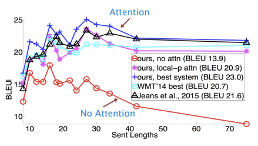
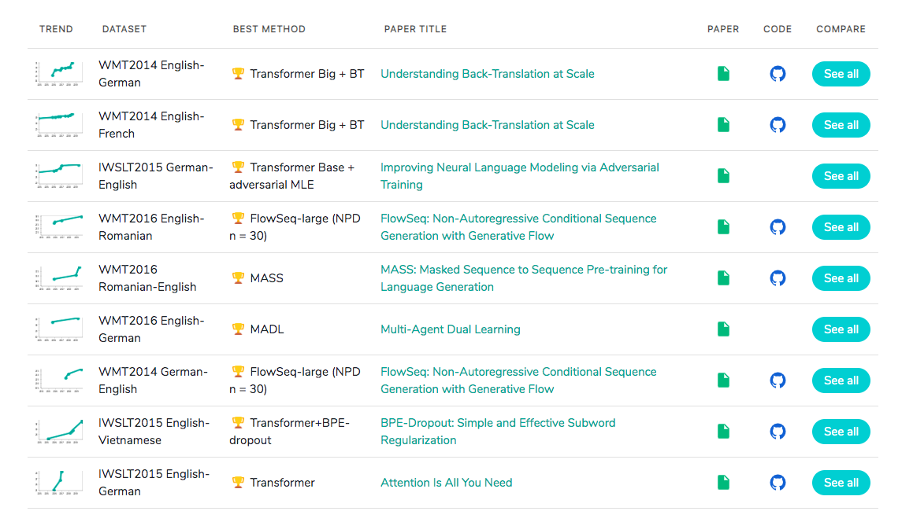

第一章:Transformer背景介绍
1.1 Transformer的诞生
2018年10月，Google发出一篇论文《BERT: Pre-training of Deep Bidirectional Transformers for Language Understanding》, BERT模型横空出世, 并横扫NLP领域11项任务的最佳成绩!
论文地址: https://arxiv.org/pdf/1810.04805.pdf
而在BERT中发挥重要作用的结构就是Transformer, 之后又相继出现XLNET，roBERT等模型击败了BERT，但是他们的核心没有变，仍然是：Transformer.
1.2 Transformer的优势
相比之前占领市场的LSTM和GRU模型，Transformer有两个显著的优势:
1, Transformer能够利用分布式GPU进行并行训练，提升模型训练效率.
2, 在分析预测更长的文本时, 捕捉间隔较长的语义关联效果更好.
下面是一张在测评比较图:

1.3 Transformer的市场
在著名的SOTA机器翻译榜单上, 几乎所有排名靠前的模型都使用Transformer,

其基本上可以看作是工业界的风向标, 市场空间自然不必多说！